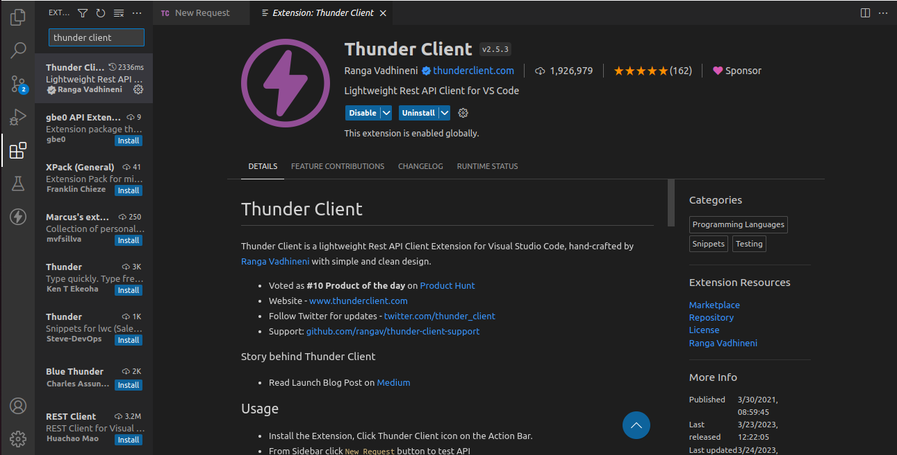
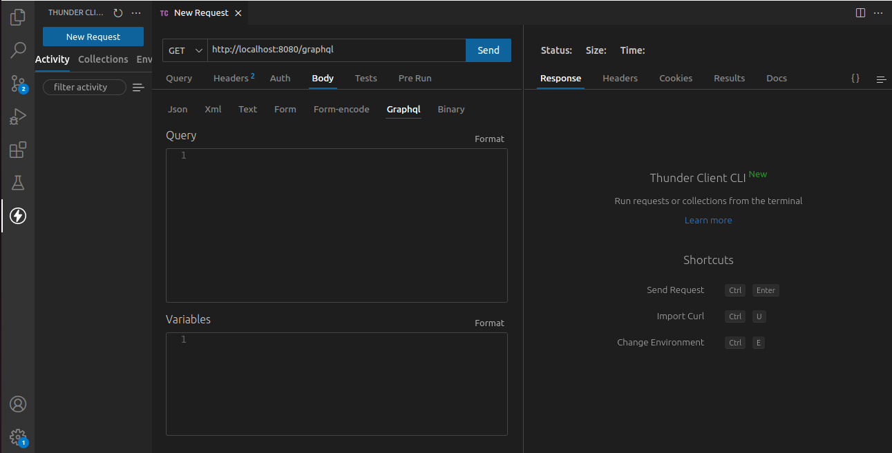
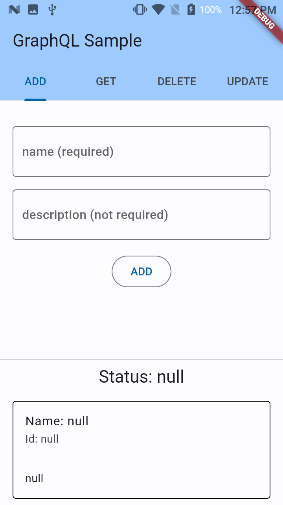
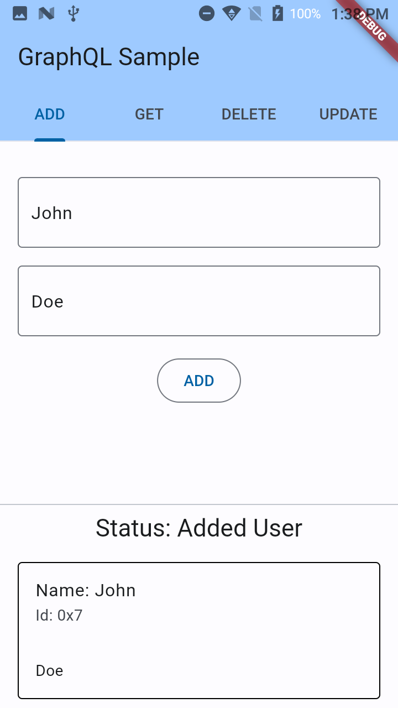
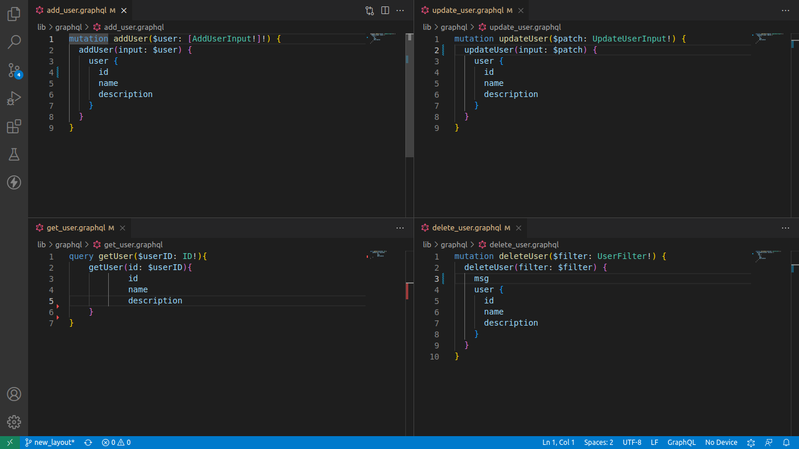

GraphQL is a query language to structure and manage your backend server. It consist of having a schema file (shema.graphql) which is the rules and instructions that your server will need to abide by. Your schema file will also help you define what your client application (which in our case the flutter app) can request of it.
There are many Graphql services available and each have their own methods to launch your own server but we will use Dgraph, the main reason is because it a native backend build from the ground up for GraphQL. It's not build on top an already exiting database which most of them do. That what make up for speed and performance.
To start your Dgraph server you'll need to install the Docker engine.
Once installed, open a termimal and run sudo docker pull dgraph/standalone:latest to download image. Then run sudo docker run -it -p 8080:8080 dgraph/standalone:latest to start the server.
Two endpoints will be avalaible to you:
http://localhost:8080/adminhttp://localhost:8080/graphqlThe admin endpoint is where you will upload your GraphQL schema. The GraphQL endpoint is where we send queries to the server to get a response.
Before sending queries you'll need to have a schema, open a new termimal and create a new file in your desired location then touch schema.graphql then nano schema.graphql and copy this schema to your file and save it:
type User {
id: ID!
name: String!
description: String
}
To push your schema to the admin endpoint, you'll need to install curl sudo apt install curl then run curl -X POST localhost:8080/admin/schema --data-binary '@schema.graphql'. If it works, you should see the output {"data":{"code":"Success","message":"Done"}}.
The schema you pushed to the server is small but a lot is happening to the backend. First of all, the schema we send is not the actual schema. Dgraph generated the real schema, it added all the boilerplate code to all of your possible queries using the User type. The only thing you need to worry is to build types.
To explain the schema file, we created a User type that will hold an id, a name and a description. Next to the ":" is the object type and "!" means that it can't be null. So if we need to add a user for example, I will need to provides these variables with the exception of description that is nullable. Also, the ID type is also generated for you when adding a User so you don't actually need to specify one.
In GraphQL, when writting queries they are three root types mutation, query and subscription. The mutation is everything that writing to the database with "add/delete/update", query is about reading the database "get" and subscription is for realtime long lasting notification results.
The Dgraph server is running and your sample schema is uploaded. You can now make some queries and mutations. To summarize the following, you'll use a http tool to write your requests in GraphQL and see the results. This will help you with the Flutter app when sending requests later.
We will be using the Thunderclient extension to test our server. In VSCode search the extension and install it. 
Click on the thunder logo, then on "New Request". Change the "Get" dropdown to "Post". Replace https://www.thunderclient.com/welcome with your GraphQL endpoint http://localhost:8080/graphql. Under the link, Change the tab "Query" to "Body". Another row of tabs should be visible then choose tab "Graphql". Your setup should look like this. 
You are now ready! We will test four GraphQL queries (3 mutation and 1 query) to prepare our Flutter app. Once you write the request in the "Query" box you can click "Send" to receive the json response for each query. You can also format the query you wrote above the "Query" box.
mutation {
addUser(input: {name: "John", description: "Doe"}) {
user {
id
name
description
}
}
}
query {
getUser(id: "0x25") {
id
name
description
}
}
mutation {
updateUser(
input: {filter: {id: ["0x25"]}, set: {name: "update John", description: "update Doe"}}
) {
user {
id
name
description
}
}
}
mutation {
deleteUser(filter: {id: ["0x25"]}) {
msg
user {
id
name
description
}
}
}
You tested your queries against the GraphQL server using Thunderclient. You are now ready to build your Flutter app that will connect to the local server.
This is the app you will build, each request type are in tabs and when you tap on the button you will see the request you did on the bottom half of the screen depending on what you enter in the text fields: | ||
 |  | |
This will be the folder structure for the app starting from lib:
📂lib
┣ 📂graphql
┃ ┣ 📜add_user.graphql
┃ ┣ 📜delete_user.graphql
┃ ┣ 📜get_user.graphql
┃ ┗ 📜update_user.graphql
┣ 📂model
┃ ┗ 📜user.dart
┣ 📂view
┃ ┣ 📜user_form_fields.dart
┃ ┗ 📜user_view.dart
┣ 📜graphql_client.dart
┗ 📜main.dart
You will start by adding all the dependencies for riverpod and freezed, copy this line and add it to the Terminal:
flutter pub add flutter_riverpod riverpod_annotation freezed_annotation json_annotation && flutter pub add -d build_runner custom_lint riverpod_generator riverpod_lint freezed json_serializable
The "graphql" folder in your file structure will contains the queries you tested in the Thunderclient extension. However, in order for the Flutter app to read those queries you need to add variables on top, so Flutter can pass those values. Here you'll need to know your Dgraph autogenerated types but the generated pattern is the same in whatever type you create in your schema. This will be queries in each file:
 The "$variableName" will be the name that you will use in your dart code to pass the values for your requests.
Your GraphQL files will serve as assets in your code to read the string, so you must declare the assets at the end of your pubspec.yaml file :
assets:
- lib/graphql/
To handle the requests you'll need to add the graphql dependency, you can do so with flutter pub add graphql.
Following along the folder structure we will add this code in yourgraphql_client.dart file:
import 'package:graphql/client.dart';
GraphQLClient graphQLClientInit() {
final httpLink = HttpLink(
'http://localhost:8080/graphql',
);
final authLink = AuthLink(
getToken: () async => '', //'Bearer $YOUR_PERSONAL_ACCESS_TOKEN',
);
Link link = authLink.concat(httpLink);
return GraphQLClient(
cache: GraphQLCache(),
link: link,
);
}
In the main.dart file, you will declare your provider for your graphql client. Here what main will look like:
import 'package:flutter/material.dart';
import 'package:flutter_riverpod/flutter_riverpod.dart';
import 'package:graphql/client.dart';
import 'package:graphql_sample/graphql_client.dart';
import 'package:graphql_sample/view/user_view.dart';
import 'package:riverpod_annotation/riverpod_annotation.dart';
part 'main.g.dart';
void main() {
runApp(const ProviderScope(child: MyApp()));
}
@riverpod
GraphQLClient graphQLClient(GraphQLClientRef ref) {
return graphQLClientInit();
}
class MyApp extends StatelessWidget {
const MyApp({super.key});
@override
Widget build(BuildContext context) {
return MaterialApp(
title: 'Flutter GraphQL Demo',
theme: ThemeData(
colorScheme: ColorScheme.fromSeed(seedColor: Colors.blue),
),
home: const HomeView(),
);
}
}
Now that you got the client setup in a provider, you can now start building the model using the @freezed annotation and @riverpod annotation for the state notifier. Add the following code in your user.dart:
import 'package:flutter/foundation.dart';
import 'package:flutter/services.dart';
import 'package:freezed_annotation/freezed_annotation.dart';
// hide the JsonSerializable as there is a library conflict with json_annotation
import 'package:graphql/client.dart' hide JsonSerializable;
import 'package:graphql_sample/main.dart';
import 'package:riverpod_annotation/riverpod_annotation.dart';
part 'user.freezed.dart';
part 'user.g.dart';
@freezed
class User with _$User {
const factory User({
required String id,
required String name,
required String? description,
}) = _User;
factory User.fromJson(Map<String, Object?> json) => _$UserFromJson(json);
}
@riverpod
class UserQueries extends _$UserQueries {
late final GraphQLClient client;
String? status;
@override
User build() {
client = ref.read(graphQLClientProvider);
return const User(id: 'null', name: 'null', description: 'null');
}
Future<void> addUser({required String name, String? description}) async {
final addUserMutation =
await rootBundle.loadString('lib/graphql/add_user.graphql');
final MutationOptions options = MutationOptions(
document: gql(addUserMutation),
variables: <String, dynamic>{
// the variable put here must match the query variable ($user)
'user': {
'name': name,
'description': description,
}
},
);
final QueryResult result = await client.mutate(options);
if (result.isLoading && result.data != null) {
status = 'Loading';
}
if (result.hasException) {
debugPrint(result.exception.toString());
status = 'Error (See Logs)';
}
debugPrint('ADD USER: ${result.data}');
final userJson = result.data?['addUser']['user'][0];
debugPrint('ADD USER TRIM DOWN: $userJson');
final User user = User.fromJson(userJson);
status = 'Added User';
state = state.copyWith(
id: user.id,
name: user.name,
description: user.description,
);
}
Future<void> deleteUser({required String id}) async {
final deleteUserMutation =
await rootBundle.loadString('lib/graphql/delete_user.graphql');
final MutationOptions options = MutationOptions(
document: gql(deleteUserMutation),
variables: <String, dynamic>{
// the variable put here must match the query variable ($filter)
'filter': {
'id': id,
}
},
);
final QueryResult result = await client.mutate(options);
if (result.isLoading && result.data != null) {
status = 'Loading';
}
if (result.hasException) {
debugPrint(result.exception.toString());
status = 'Error (See Logs)';
}
debugPrint('DELETE USER: ${result.data}');
final userJson = result.data?['deleteUser']['user'][0];
debugPrint('DELETE USER TRIM DOWN: $userJson');
final User user = User.fromJson(userJson);
status = 'Deleted User';
state = state.copyWith(
id: user.id,
name: user.name,
description: user.description,
);
}
Future<void> updateUser({
required String id,
required String name,
String? description,
}) async {
final updateUserMutation =
await rootBundle.loadString('lib/graphql/update_user.graphql');
final MutationOptions options = MutationOptions(
document: gql(updateUserMutation),
variables: <String, dynamic>{
// the variable put here must match the query variable ($patch)
'patch': {
'filter': {
'id': [id],
},
'set': {
'name': name,
'description': description,
}
}
},
);
final QueryResult result = await client.mutate(options);
if (result.isLoading && result.data != null) {
status = 'Loading';
}
if (result.hasException) {
debugPrint(result.exception.toString());
status = 'Error (See Logs)';
}
debugPrint('UPDATED USER: ${result.data}');
final userJson = result.data?['updateUser']['user'][0];
debugPrint('UPDATED USER TRIM DOWN: $userJson');
final User user = User.fromJson(userJson);
status = 'Updated User';
state = state.copyWith(
id: user.id,
name: user.name,
description: user.description,
);
}
Future<void> getUser({required String id}) async {
final getUserQuery =
await rootBundle.loadString('lib/graphql/get_user.graphql');
final QueryOptions options = QueryOptions(
document: gql(getUserQuery),
variables: <String, dynamic>{
// the variable put here must match the query variable ($userID)
'userID': id
},
);
final QueryResult result = await client.query(options);
if (result.isLoading && result.data != null) {
status = 'Loading';
}
if (result.hasException) {
debugPrint(result.exception.toString());
status = 'Error (See Logs)';
}
debugPrint('GET USER: ${result.data}');
final userJson = result.data?['getUser'];
debugPrint('GET USER TRIM DOWN: $userJson');
final User user = User.fromJson(userJson);
status = 'Got User';
state = state.copyWith(
id: user.id,
name: user.name,
description: user.description,
);
}
}
For the @freezed annotation part, you declare the id, name and the nullable description(If you remember previously in your graphql schema, you had a nullable String type). Then added the fromJson to parse your json from the graphql requests.
## ignore lint analysis on generated files
analyzer:
exclude:
- "**/*.g.dart"
- "**/*.freezed.dart"
If I explain the code from the @riverpod annotation by taking the "addUser" method as example. You loaded the GraphQL query file into a string. You create and intialize a MutationOptions variable, QueryOptions if getting the User. In the MutationOptions arguments. You create a GraphQL document by passing your string to ‘gql' special function. Then in your variables, you pass the json values to prepare for your request. In this case, that would be your name and description variable. When that part over, you can then call the request with client.mutate or client.query if getting the User passing along your options. Then you listen the results wether it is loading or having an exception. Finally you parse the json data with userJson and generate your User model that you will pass as your new state.
Now that you added your model, you can now link the widgets with Riverpod. Add the following in the files:
user_form_fields.dart:import 'package:flutter/material.dart';
import 'package:flutter_riverpod/flutter_riverpod.dart';
import 'package:graphql_sample/model/user.dart';
class UserFormField extends ConsumerStatefulWidget {
final int index;
final String name;
const UserFormField({
required this.index,
required this.name,
super.key,
});
@override
UserFormFieldState createState() => UserFormFieldState();
}
class UserFormFieldState extends ConsumerState<UserFormField> {
final idTextController = TextEditingController();
final nameTextController = TextEditingController();
final descriptionTextController = TextEditingController();
InputDecoration namedOutlineInputBorder(String hint) {
return InputDecoration(
border: const OutlineInputBorder(),
hintText: hint,
);
}
@override
void dispose() {
idTextController.dispose();
nameTextController.dispose();
descriptionTextController.dispose();
super.dispose();
}
@override
Widget build(BuildContext context) {
return Padding(
padding: const EdgeInsets.all(16.0),
child: Column(
children: [
if (widget.index != 0)
TextField(
controller: idTextController,
decoration: namedOutlineInputBorder('id (required)'),
),
const SizedBox(height: 16),
if (widget.index == 0 || widget.index == 3) ...[
TextField(
controller: nameTextController,
decoration: namedOutlineInputBorder('name (required)'),
),
const SizedBox(height: 16),
TextField(
controller: descriptionTextController,
decoration: namedOutlineInputBorder('description (not required)'),
),
const SizedBox(height: 16),
],
OutlinedButton(
onPressed: () async {
FocusScope.of(context).unfocus(); // remove the keyboard
final queries = ref.read(userQueriesProvider.notifier);
switch (widget.name) {
case 'ADD':
await queries.addUser(
name: nameTextController.text,
description: descriptionTextController.text);
break;
case 'GET':
await queries.getUser(id: idTextController.text);
break;
case 'DELETE':
await queries.deleteUser(id: idTextController.text);
break;
case 'UPDATE':
await queries.updateUser(
id: idTextController.text,
name: nameTextController.text,
description: descriptionTextController.text,
);
break;
default:
throw ('ERROR: widget name is ${widget.name}');
}
},
child: Text(
widget.name,
),
)
],
),
);
}
}
user_view.dartimport 'package:flutter/material.dart';
import 'package:flutter_riverpod/flutter_riverpod.dart';
import 'package:graphql_sample/view/user_form_fields.dart';
import '../model/user.dart';
class HomeView extends StatelessWidget {
const HomeView({super.key});
@override
Widget build(BuildContext context) {
List<String> queryNames = ['ADD', 'GET', 'DELETE', 'UPDATE'];
return DefaultTabController(
length: 4,
child: Scaffold(
appBar: AppBar(
title: const Text('GraphQL Sample'),
backgroundColor: Theme.of(context).colorScheme.inversePrimary,
bottom: TabBar(
tabs: queryNames
.map((name) => Tab(
text: name,
))
.toList(),
),
),
body: SafeArea(
child: SingleChildScrollView(
child: Column(
children: [
SizedBox(
height: MediaQuery.of(context).size.height / 2,
child: TabBarView(
children: [
UserFormField(
index: 0,
name: queryNames[0],
),
UserFormField(
index: 1,
name: queryNames[1],
),
UserFormField(
index: 2,
name: queryNames[2],
),
UserFormField(
index: 3,
name: queryNames[3],
),
],
),
),
const Divider(),
const ResultWidget(),
],
),
),
),
),
);
}
}
class ResultWidget extends ConsumerWidget {
const ResultWidget({super.key});
@override
Widget build(BuildContext context, WidgetRef ref) {
final user = ref.watch(userQueriesProvider);
final String? status = ref.read(userQueriesProvider.notifier).status;
return Column(
children: [
Text(
'Status: ${status ?? 'null'}',
style: Theme.of(context).textTheme.titleLarge,
),
Card(
shape: const OutlineInputBorder(),
elevation: 0,
margin: const EdgeInsets.all(16.0),
child: Column(
crossAxisAlignment: CrossAxisAlignment.start,
children: [
ListTile(
title: Text('Name: ${user.name}'),
subtitle: Text('Id: ${user.id}'),
),
Padding(
padding: const EdgeInsets.all(16.0),
child: Text(user.description ?? 'null'),
),
],
),
),
],
);
}
}
The views are pretty straight forward but do take the time to understand them.
Now that your code is ready, you can build and run the app. Enter some values in the text fields. Make sure that you have added at least one User before doing get/update/delete queries. Even though you are capturing some errors with the status variable. I encourage you to check the debug logs in your console. It gives you a better idea about what type of errors you're encountering in the app.
If you have trouble running the app, you can compare your code from the github repository.
You started your own GraphQL server, built some queries along with linking the Flutter GraphQL client. You're on your way to your journey of being a full stack developer, now that you can handle both the backend and the frontend.
Some references that help me with the contents of this codelab.
Designing Graphql Schema from Dgraph
Get the Generated Schema in Dgraph
This codelab may have some issues and to me this is only a draft, they are improvements that can be done. If you found a problem or have suggestions, you can click the report a mistake on the bottom left of the codelab it will open a github issue.